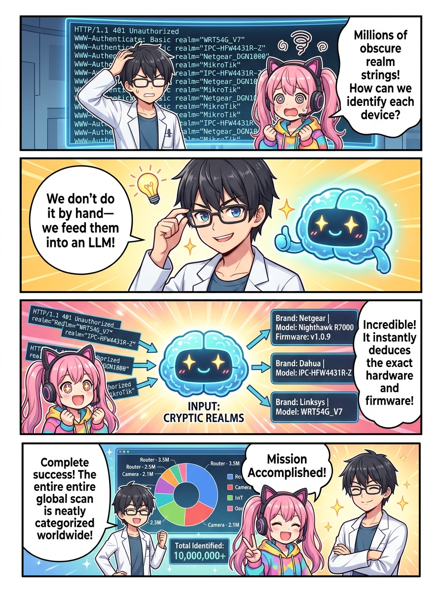
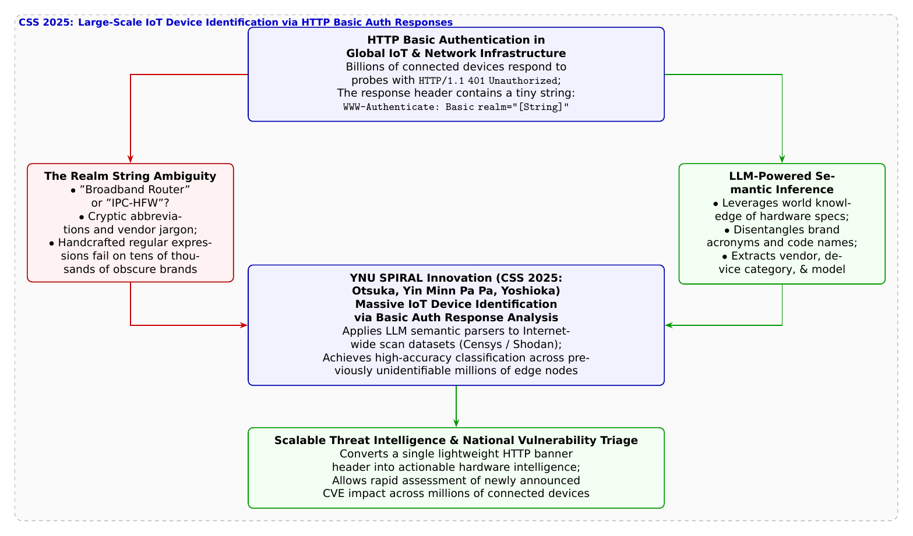

🎨 4コマ漫画挿絵（文字なし）
AI高解像度生成
▲ 【挿絵】青葉台高校 情報科学部＆帝都科学大学サイバーディフェンス・ラボでの実践シーン
💬 4コマ漫画キャラクターセリフ (Story Dialogue Script)
日・英バイリンガル (JA / EN)[葵]「門前払いされたときの捨て台詞（レルム文字列）だけじゃ、何の機械かわからないよね！」
[Aoi] "How could anyone identify the hardware from just a cryptic door-slamming realm string!?"
[悠真]「そこで登場したのが、三菱電機と横浜国大SPIRALのCSS 2025共同研究なんだ！ 大規模言語モデル（LLM）でレルム文字列を意味解読するんだよ」
[Yuma] "That's why Mitsubishi Electric and YNU SPIRAL presented this CSS 2025 breakthrough! Decoding realm strings with LLMs!"
[葵]「AIがデジタルの古文書解読者みたいに、エンジニアのつけた暗号を読み解いちゃった！」
[Aoi] "The LLM acted like an archeologist deciphering ancient cryptic inscriptions!"
[悠真]「新しい脆弱性が出た瞬間、世界中のどこに影響があるか即座に判定できる最強の盾だよ」
[Yuma] "The moment a new CVE drops, we can instantly map its global blast radius to shield society!"
📖 小説本文
冬の夕闇が迫る情報科学部室。大型モニターには、世界規模のインターネット検索エンジン（Censys）から取得された数百ギガバイトのネットワーク観測データセットが展開されていた。
「……HTTPステータスコード `401 Unauthorized`。認証が必要な保護されたページにアクセスした際、Webサーバーがクライアントに対して『アクセス権がありません』と返す標準的なエラー応答です」
白石結衣がカーソルを動かす。画面には、世界中から集められた数百万件もの `401` エラーログがズラリと並んでいた。
「ログイン画面の本体まで見せてくれない『門前払い』の機器が、世界中にこんなにあるんだ……！」橘葵が目を丸くする。
神崎蓮がログの一行をハイライトした。
「そうなんです葵先輩。でも注目してほしいのは、このヘッダに含まれている `WWW-Authenticate: Basic realm="..."` という一行です。Basic認証では、ブラウザのポップアップに『この領域の名前（レルム: Realm）』を表示するために、開発者が設定した文字列がそのまま平文で返ってくるんです」
「レルム……？ どんな文字が書いてあるの？」
「それが問題なんです。たとえば `realm="Broadband Router"` のように親切なものならルーターだと推測できますが、大半の機器は `realm="NET_DVR_IPC"` とか `realm="TL-WR841N-V13"`、あるいは `realm="Archer_C7_v5_ap"` のような、メーカーの開発者しか理解できないような略語や社内コードネームが書かれているんです」
蓮が深いため息をついた。
「これまでは、セキュリティ技術者が手作業で正規表現（Regex）の辞書ルールを書いて分類していました。でも、世界中には中国や台湾、東欧などの中小メーカーが無数に存在し、毎年新しい型番が生まれています。手動ルールでは全体の2割も識別できず、残りの8割は『正体不明の機器』として放置されていたんです」
「正体不明の機器がネット上に何百万台もあるなんて、まるで名前の分からない地雷が埋まっているみたいで怖いよ……」葵が身震いする。
「その分厚い壁を、最新の人工知能の知性で打ち破ったのが、三菱電機と横浜国立大学SPIRALの**大塚瑠莉氏、インミンパパ特任准教授、吉岡克成教授ら**によるCSS 2025の研究なんだよ」
城崎悠真が笑顔でホワイトボードの前に進み出た。
「研究チームは、ハードウェアの知識を豊富に学習した大規模言語モデル（LLM）を活用し、この謎めいた『Basic realm文字列』を意味的に推論・分類する自動化エンジンを開発したんだ」
「LLMを使う……？ ChatGPTのようなAIに、あの暗号みたいな文字列を読ませるってことですか？」蓮が尋ねる。
「そうだ。LLMは世界中の技術仕様書、マニュアル、GitHubのリポジトリ、パーツリストを網羅的に学習している。だから人間には意味不明な `NET_DVR` という単語を見ても、『これは大手監視カメラメーカーがDVR/NVR機器の内部ファームウェアで伝統的に用いている識別子である』と文脈を瞬時に理解できるんだ。メーカー名、機器種別（ルーター、IPカメラ、NAS、VoIPなど）、そしてモデル番号まで正確に構造化データとして抽出してくれる」
部室の端末で、推論パイプラインのデモが実行された。
先ほどまで「未知のホスト」と分類されていた謎の文字列群が、LLMの推論によって次々と『〇〇社製スマートネットワークカメラ（型番XXX）』『〇〇社製産業用シリアル変換ゲートウェイ』と鮮やかにラベリングされていく。
「わあ……！ まるで古代文字の石碑を考古学者がすらすら解読していくみたい！」葵が手を叩いて喜んだ。
「この手法の最も素晴らしいところは**『極めて低負荷で高速』**という点です」結衣が熱っぽく語った。
「前話のWebUIスキャンでは画面全体を描画する必要がありましたが、この方式ならわずか数ミリ秒のHTTPヘッダ1往復（401応答）だけで、機器の正体が判明します。Censysなどの既存の巨大な公開観測データにそのまま適用できるため、地球規模のIoTエコシステムを即座に可視化できるのです」
「これがあれば」と悠真が力強く締めくくった。「もし明日、あるメーカーのルーターに重大な脆弱性が見つかっても、『世界中のどのIPアドレスの機器が該当するか』を数分で特定し、世界規模の被害拡大を未然に防ぐことができる。AIの知性とサイバー観測工学が融合した、未来の盾なんだよ」
夕暮れの光が差し込む部室で、高校生たちはデジタルの深淵に潜む声なき機器たちを解読する知の力に、深く胸を打たれていた。
---
📊 セキュリティ構造図解 (TikZ LuaLaTeX生成)
国家安全基準・工学図解
▲ 【技術構造図】IPAデジタルスキル標準・国際規格に準拠した仕組みのモデル化